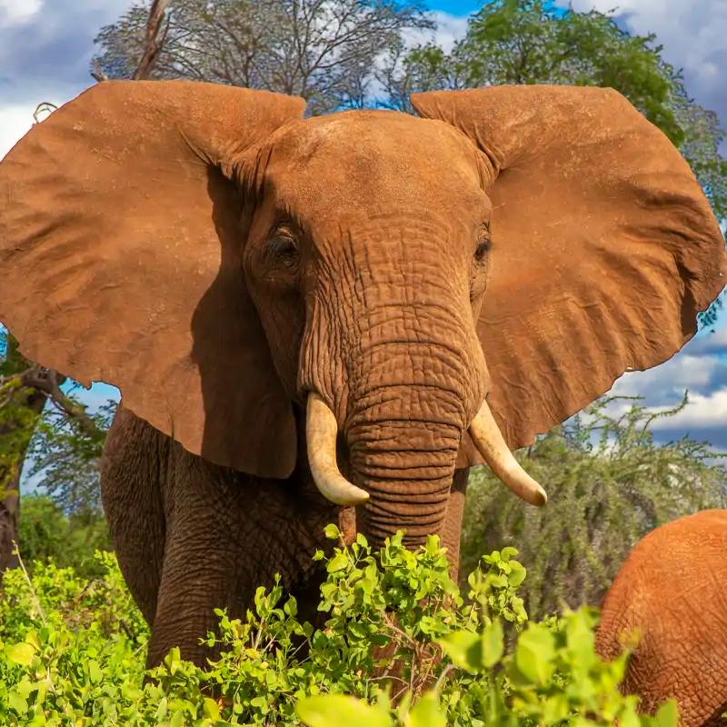
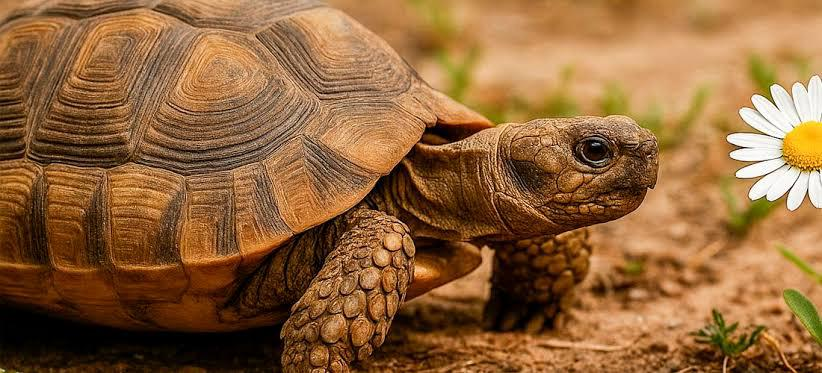
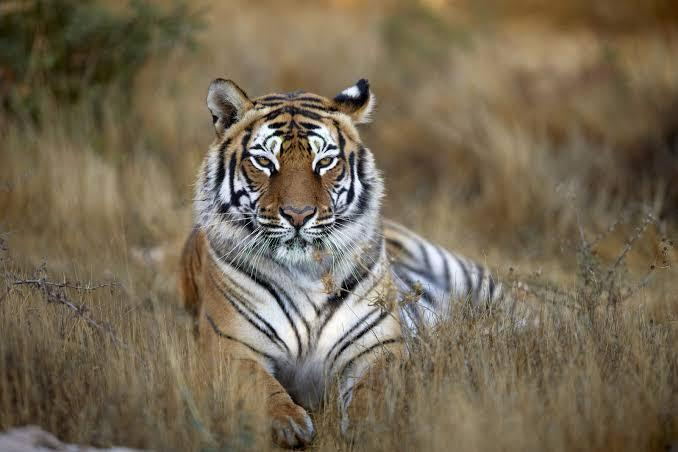
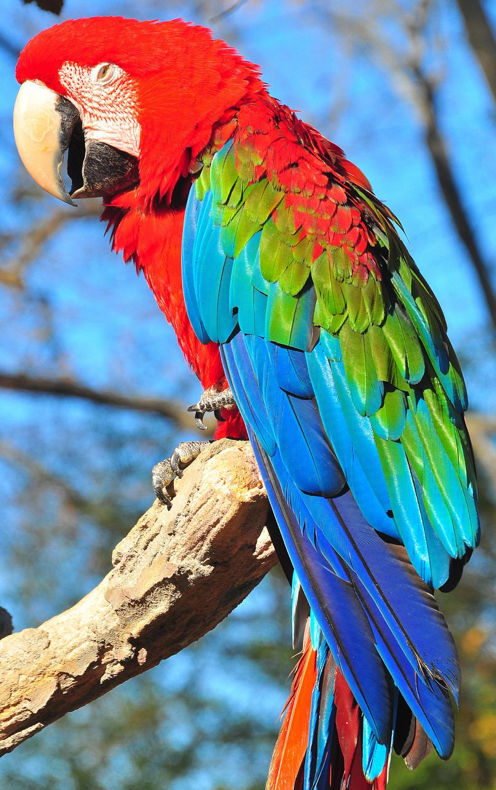
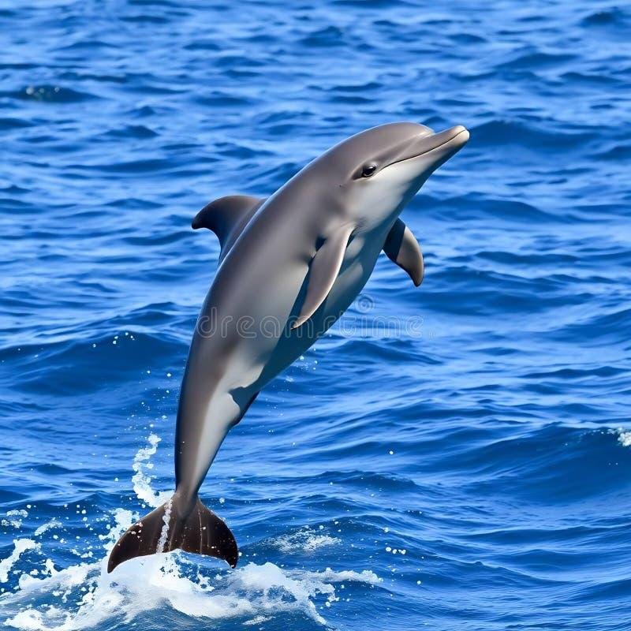
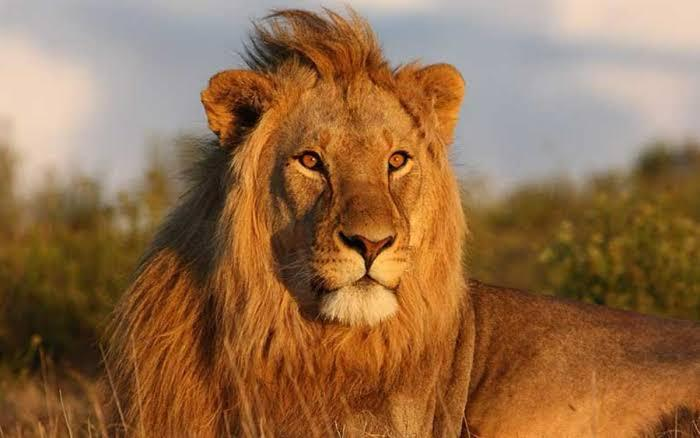

ℰ𝓍𝒾𝓈𝓉𝑒𝓃 𝓂𝒾𝓁𝓁𝑜𝓃𝑒𝓈 𝒹𝑒 𝒶𝓃𝒾𝓂𝒶𝓁𝑒𝓈 𝓆𝓊𝑒 𝓃𝑒𝒸𝑒𝓈𝒾𝓉𝒶𝓃 𝓃𝓊𝑒𝓈𝓉𝓇𝒶 𝒶𝓎𝓊𝒹𝒶. 𝒞𝑜𝓃𝑜𝒸é 𝓈𝓊𝓈 𝒽𝒾𝓈𝓉𝑜𝓇𝒾𝒶𝓈 𝓎 𝒹𝑒𝓈𝒸𝓊𝒷𝓇í 𝒸ó𝓂𝑜 𝓅𝑜𝒹𝑒𝓂𝑜𝓈 𝓅𝓇𝑜𝓉𝑒𝑔𝑒𝓇𝓁𝑜𝓈.

𝑬𝒔𝒕𝒂 𝒂𝒎𝒆𝒏𝒂𝒛𝒂𝒅𝒐𝒔 𝒑𝒐𝒓 𝒍𝒂 𝒄𝒂𝒛𝒂 𝒇𝒖𝒓𝒕𝒊𝒈𝒂 𝒚 𝒍𝒂 𝒑𝒆𝒓𝒅𝒊𝒅𝒂 𝒅𝒆 𝒔𝒖 𝒉𝒂𝒃𝒊𝒕𝒂𝒅 𝒏𝒂𝒕𝒖𝒓𝒂𝒍

𝑳𝒂 𝒄𝒐𝒏𝒕𝒂𝒎𝒊𝒏𝒂𝒄𝒊ó𝒏 𝒅𝒆 𝒍𝒐𝒔 𝒐𝒄é𝒂𝒏𝒐𝒔 𝒑𝒐𝒏𝒆 𝒆𝒏 𝒑𝒆𝒍𝒊𝒈𝒓𝒐 𝒔𝒖 𝒔𝒖𝒑𝒆𝒓𝒗𝒊𝒗𝒆𝒏𝒄𝒊𝒂.

𝑵𝒆𝒄𝒆𝒔𝒊𝒕𝒂𝒏 𝒑𝒓𝒐𝒕𝒆𝒄𝒄𝒊ó𝒏 𝒇𝒓𝒆𝒏𝒕𝒆 𝒂 𝒍𝒂 𝒄𝒂𝒛𝒂 𝒊𝒍𝒆𝒈𝒂𝒍 𝒚 𝒍𝒂 𝒅𝒆𝒔𝒕𝒓𝒖𝒄𝒄𝒊ó𝒏 𝒅𝒆 𝒃𝒐𝒔𝒒𝒖𝒆𝒔.

𝑴𝒖𝒄𝒉𝒂𝒔 𝒆𝒔𝒑𝒆𝒄𝒊𝒆𝒔 𝒔𝒖𝒇𝒓𝒆𝒏 𝒑𝒐𝒓 𝒆𝒍 𝒕𝒓á𝒇𝒊𝒄𝒐 𝒊𝒍𝒆𝒈𝒂𝒍 𝒚 𝒍𝒂 𝒑é𝒓𝒅𝒊𝒅𝒂 𝒅𝒆 𝒔𝒖𝒔 𝒉𝒐𝒈𝒂𝒓𝒆𝒔.

𝑵𝒆𝒄𝒆𝒔𝒊𝒕𝒂𝒏 𝒎𝒂𝒓𝒆𝒔 𝒍𝒊𝒎𝒑𝒊𝒐𝒔 𝒚 𝒑𝒓𝒐𝒕𝒆𝒄𝒄𝒊ó𝒏 𝒇𝒓𝒆𝒏𝒕𝒆 𝒂 𝒍𝒂𝒔 𝒓𝒆𝒅𝒆𝒔 𝒅𝒆 𝒑𝒆𝒔𝒄𝒂.

𝑳𝒂 𝒑é𝒓𝒅𝒊𝒅𝒂 𝒅𝒆 𝒕𝒆𝒓𝒓𝒊𝒕𝒐𝒓𝒊𝒐 𝒚 𝒍𝒐𝒔 𝒄𝒐𝒏𝒇𝒍𝒊𝒄𝒕𝒐𝒔 𝒂𝒎𝒆𝒏𝒂𝒛𝒂𝒏 𝒂 𝒔𝒖𝒔 𝒑𝒐𝒃𝒍𝒂𝒄𝒊𝒐𝒏𝒆𝒔.
𝐸𝑠𝑡𝑎𝑠 𝑜𝑟𝑔𝑎𝑛𝑖𝑧𝑎𝑐𝑖𝑜𝑛𝑒𝑠 𝑡𝑟𝑎𝑏𝑎𝑗𝑎𝑛 𝑝𝑎𝑟𝑎 𝑟𝑒𝑠𝑐𝑎𝑡𝑎𝑟, 𝑐𝑢𝑖𝑑𝑎𝑟 𝑦 𝑝𝑟𝑜𝑡𝑒𝑔𝑒𝑟 𝑑𝑖𝑓𝑒𝑟𝑒𝑛𝑡𝑒𝑠 𝑒𝑠𝑝𝑒𝑐𝑖𝑒𝑠
𝑇𝑟𝑎𝑏𝑎𝑗𝑎 𝑒𝑛 𝑙𝑎 𝑐𝑜𝑛𝑠𝑒𝑟𝑣𝑎𝑐𝑖ó𝑛 𝑑𝑒 𝑒𝑠𝑝𝑒𝑐𝑖𝑒𝑠, 𝑙𝑎 𝑝𝑟𝑜𝑡𝑒𝑐𝑐𝑖ó𝑛 𝑑𝑒 𝑒𝑐𝑜𝑠𝑖𝑠𝑡𝑒𝑚𝑎𝑠 𝑦 𝑙𝑎 𝑒𝑑𝑢𝑐𝑎𝑐𝑖ó𝑛 𝑎𝑚𝑏𝑖𝑒𝑛𝑡𝑎𝑙.
𝗗𝗢𝗡𝗔𝗥 𝗬 𝗖𝗢𝗟𝗔𝗕𝗢𝗥𝗔𝗥𝐷𝑒𝑠𝑎𝑟𝑟𝑜𝑙𝑙𝑎 𝑝𝑟𝑜𝑦𝑒𝑐𝑡𝑜𝑠 𝑑𝑒 𝑖𝑛𝑣𝑒𝑠𝑡𝑖𝑔𝑎𝑐𝑖ó𝑛, 𝑐𝑜𝑛𝑠𝑒𝑟𝑣𝑎𝑐𝑖ó𝑛 𝑦 𝑝𝑟𝑜𝑡𝑒𝑐𝑐𝑖ó𝑛 𝑑𝑒 𝑙𝑎 𝑓𝑎𝑢𝑛a.
𝗖𝗢𝗡𝗢𝗖𝗘𝗥 𝗟𝗔 𝗙𝗨𝗡𝗗𝗔𝗖𝗜Ó𝗡𝐶𝑜𝑙𝑎𝑏𝑜𝑟á 𝑒𝑐𝑜𝑛ó𝑚𝑖𝑐𝑎𝑚𝑒𝑛𝑡𝑒 𝑐𝑜𝑛 𝑜𝑟𝑔𝑎𝑛𝑖𝑧𝑎𝑐𝑖𝑜𝑛𝑒𝑠 𝑞𝑢𝑒 𝑝𝑟𝑜𝑡𝑒𝑔𝑒𝑛 𝑎 𝑙𝑜𝑠 𝑎𝑛𝑖𝑚𝑎𝑙𝑒𝑠.
𝐶𝑜𝑚𝑝𝑎𝑟𝑡í 𝑖𝑛𝑓𝑜𝑟𝑚𝑎𝑐𝑖ó𝑛 𝑝𝑎𝑟𝑎 𝑔𝑒𝑛𝑒𝑟𝑎𝑟 𝑐𝑜𝑛𝑐𝑖𝑒𝑛𝑐𝑖𝑎 𝑠𝑜𝑏𝑟𝑒 𝑒𝑙 𝑐𝑢𝑖𝑑𝑎𝑑𝑜 𝑎𝑛𝑖𝑚𝑎𝑙.
𝐶𝑜𝑛𝑜𝑐é 𝑙𝑜𝑠 𝑝𝑟𝑜𝑔𝑟𝑎𝑚𝑎𝑠 𝑑𝑒 𝑣𝑜𝑙𝑢𝑛𝑡𝑎𝑟𝑖𝑎𝑑𝑜 𝑑𝑒 𝑙𝑎𝑠 𝑜𝑟𝑔𝑎𝑛𝑖𝑧𝑎𝑐𝑖𝑜𝑛𝑒𝑠.